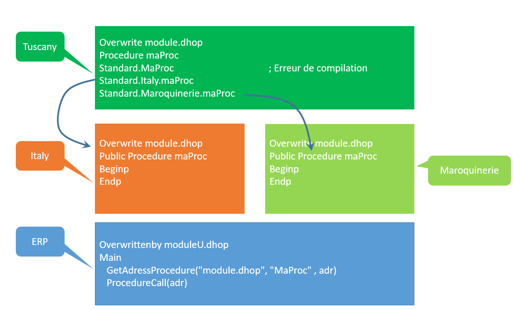

Il y a deux cas particuliers où l'exécuteur ne sait pas dans quel ordre appeler les fonctions. L'intégrateur devra alors spécifier explicitement l'ordre des appels.
CAS 1
Voyons sur un exemple :
le standard appelle la procédure MaProc en utilisant GetAdressProcedure. La procédure MaProc n'existe pas dans le standard.
Plusieurs
add-ons déclarent la procédure MaProc en public. Si l'intégrateur
surcharge cette procédure l'exécuteur ne sais pas quoi faire. A la
compilation il y aura une erreur
Dans ce cas, il faut obligatoirement surcharger la procédure et utiliser
la nouvelle écriture :
standard.nom_de_laddOn.procedure
Un nouveau choix de Xwin, au clic droit sur le projet, <Surcharges multiples><Contrôler les fonctions> permet de détecter ce cas de figure. Il est important de lancer ce choix lors de l'installation pour vérifier que si la même procédure est surchargée plusieurs fois mais n'existe pas dans la base, elle doit obligatoirement exister au niveau intégrateur.
.

CAS 2
Il existe des appels via GetAdressProcedure ou GetAdressFunction vers des modules qui n'existent pas dans le standard de l'ERP. Ces modules sont uniquement créés dans le cadre des surcharges.
Exemple :
GTPMFICSQL appelle GTTMFICSQL mais GTTMFICSQL n'existe pas dans le standard de l'ERP, car il est dédié aux surcharges.
L'add-on Italy crée le source GTTMFICSQL et y met des fonctions.
L'add-on Maroquinerie fait de même.
Et l'intégrateur Tuscany ajoute également le module GTTMFICSQL.
Si on veut que les fonctions des add-on soient exécutées, il faut que le module Tuscany se charge de l'appel des fonctions dans les deux add-ons.
Pour ce faire, le module intégrateur doit déclarer les deux modules de l'add-on. Cela se fait par la syntaxe suivante :
Module nom_addon.nom_fichier AS alias_module
Ensuite l'alias peut être utilisé comme un nom de module classique.
Exemple :
module
maroquinerie.GTTMFICSQL.dhop as maroquinerie_GttmficSql
module italy.GTTMFICSQL.dhop as italy_GttmficSql
italy.GttmficSql.Fonction(...)